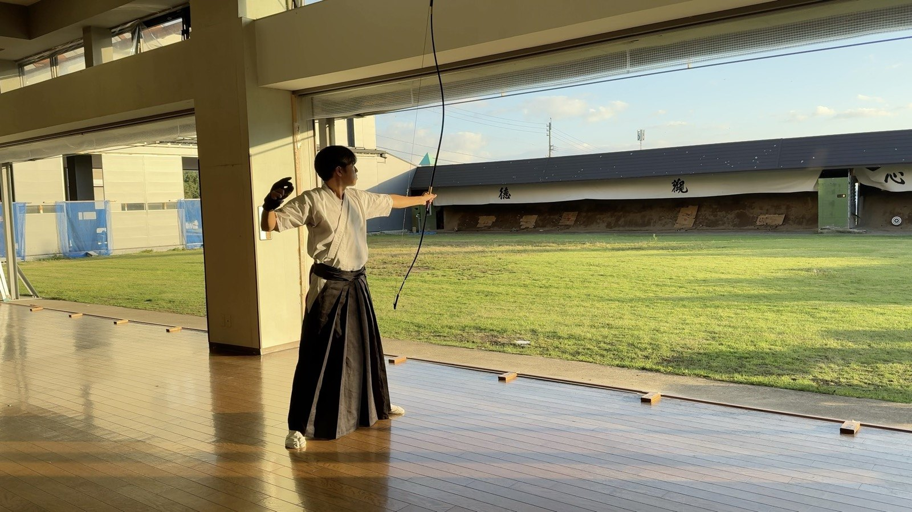

筑波大学大学院
TaikiMisawa
AIを、仲間と現実にしていく。
視覚情報・センサーを扱う研究と、AI・自動化の開発に取り組む大学院生です。筑波AIハッカソン2026を企画・運営し、多様な専門が出会い、一緒につくる場を育てています。

RECENT MOMENTS日々は、動いている。
3代表的な取り組み
2023—26研究と現場での活動
JP / EN言葉を越えた協働
Daily日々の活動記録
Community / Organizing
2026.09.20 — 09.27
企画・運営
筑波AIハッカソン2026
専門を持ち寄り、つくる仲間に出会う。
お題は「筑波大学を、ちょっと便利にしてください。」。4チームがAIを使い、8日間でそれぞれの作品を形にしました。私は企画・運営を担当し、先生や企業、学生の協力とともに開催を終えました。
色とりどりの専門が集まる筑波で、知識や関心が新しいものづくりにつながる場を増やしたい。開催の経験を、次の仲間づくりとコミュニティへつなげていきます。
構想サイトには、これから実現したい開催の形をまとめています。

Selected Work
成果と証拠で見る、3つの取り組み
研究、プロトタイプ、国際協働。役割と記録を確認できる代表的な活動です。
Current Lanes
いま伸ばしている領域
Journey
主要な歩み
About
研究する。つくる。仲間をつなぐ。
研究に取り組みながら、進化を続けるAIを追いかけ、身の回りや社会の仕組みを自動化する方法を探っています。さまざまな専門が集まる筑波大学で、人と人が出会い、新しいものを生み出すきっかけをつくることも、自分の活動のひとつになりました。
まだ学ぶことも、技術的にできないこともたくさんあります。周りの力を借り、相談し、一緒に試しながら進みたい。失敗を恐れず挑戦することと、人を頼ることを大切にしています。
Vision
人が、本来向き合う活動に集中できる環境をつくる。
自動化と知能化を通じて、情報の整理・判断・実行を支援し、一人ひとりが創造的で意味のある活動に時間を使える社会を目指します。

Beyond the Screen
弓道と三味線も、
続けていく。
研究やAIに熱中する日々の中でも、趣味として弓道をしっかり続けたい。三味線も、できるところまでやっていきたいと思っています。
新しい挑戦と、続けたい楽しみ。その両方を持ちながら、友人を増やし、一緒に活動するサークルづくりにも取り組んでいきます。
Future Dream
誰かの可能性を広げる未来へ。
ドラえもんのように、人に寄り添い、必要なときに力になれる存在が実現する未来。その実現に、僕も関わりたい。
小学4年生の「将来の夢」を書く機会に、僕はその夢をまっすぐ書きました。先生には少し冗談のように受け取られましたが、親はその夢を笑わず、守ってくれました。振り返ると、あの経験が、今も新しいことにワクワクして挑戦する自分につながっている気がします。
ドラえもんをつくるという夢には、いろいろな専門を持つ仲間が必要です。研究と開発を重ねながら、ハッカソンやコミュニティを通じて、一緒に未来を考え、つくる人と出会っていきたいと思っています。
Contact
一緒に考え、つくるための連絡先
AIや研究の話をする人、一緒に何かをつくる人、ハッカソンやサークルを育てる人。専門にかかわらず、相談や協働のきっかけを歓迎します。